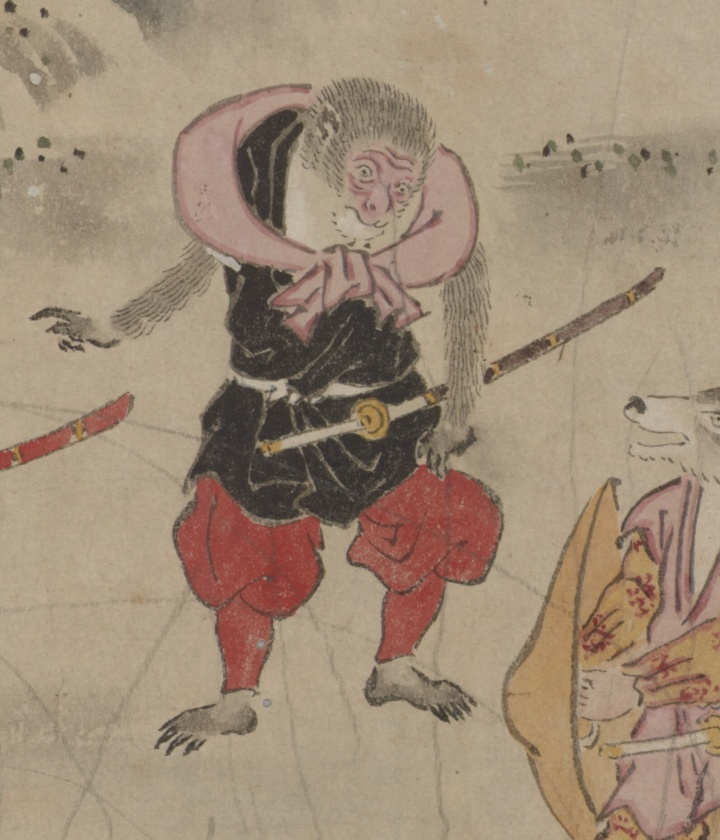

← 图鉴索引

刀を差した猿。
著作者：龍雲斎・大田南畝／出典：親書誌：U426_nichibunken_0453：［桃太郎絵巻］／日付：2024／資源識別子：U426_nichibunken_0453_0001_0001
Copyright (c)2010- International Research Center for Japanese Studies, Kyoto, Japan. All rights reserved.